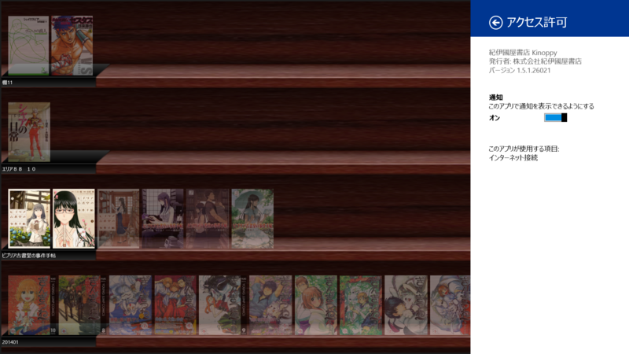

ミュージック 2.2.550.0、ビデオ 2.2.550.0、Microsoft Minesweeper 2.2.1401.2303、紀伊國屋書店 Kinoppy 1.5.1.26021
公開日：
2か月ぐらい休んでたけど、またぼちぼちメモることにした。更新チェック面倒なのでスクリプトのお勉強中。
Microsoft Minesweeper 2.2.1401.2303
2.1.1312.2409 からの変更点
バグの修正および最適化
紀伊國屋書店 Kinoppy 1.5.1.26021

1.5.0.25804（紀伊國屋書店、電子書籍リーダー「Kinoppy」のWindows ストアアプリ版を無償公開 - 窓の杜）からの変更点
削除した書籍をアプリから再同期できる「クラウド本棚」機能を追加しました。
書籍のダウンロードが正常に行われない障害を修正しました。
一部書籍でページが重複して表示される障害を修正しました。
その他不具合を修正しました。
あれ、なかったんだっけ？ お疲れ様です！